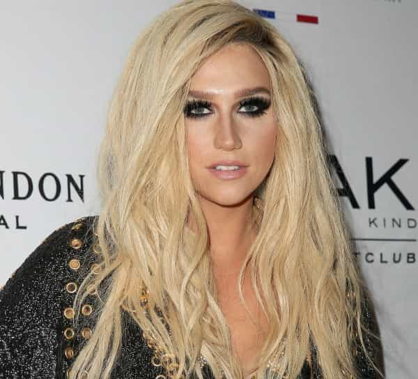
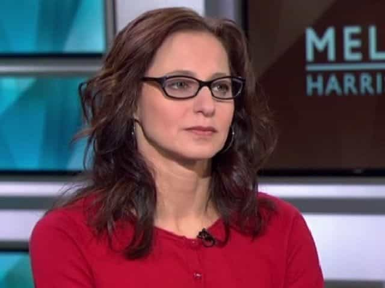

< < < Back
Twitter Feminists “Convict” Singer Kesha’s Music Producer Of Rape – Return Of Kings
For some time now, self-styled bad girl pop singer Kesha has been locked in a civil legal battle with her long-term producer, Dr. Luke (Lukasz Gottwald). Among other things, such as claims he forced her to take narcotics, Kesha alleges that Dr. Luke raped and abused her over a ten year period. “Rape culture” hysteria being as it is, many have rushed to take Kesha’s side, adamantly calling the respected producer a rapist. Coincidentally, Kesha is contractually unable to record or generally perform outside of her commercial partnership with Dr. Luke.
Already a multimillionaire (unless she spent it all), Kesha’s legal representatives are imploring a New York court to issue an injunction to speed up the case. She has already failed at having the suit heard in California, as her contract with Dr. Luke stipulated that disputes must be dealt with in New York. Anyone with a semblance of legal knowledge is aware that civil cases are usually protracted and, above all else, costly. Kesha is thus looking to do what few others can, as she says her career will be “ruined” if she can’t rid herself of her obligations with Dr. Luke and quickly find someone else to work with.
Twitter feminists are now bemoaning the financial loss to Kesha from speaking about her “rape,” without anything so much as a thimble’s worth of proof against Dr. Luke. Here’s an example:
The media is abandoning any sense of journalistic ethics

It’s very fitting that Anna Silman has worked extensively in Salon’s entertainment section. Legal niceties like the presumption of innocence and the effect on someone accused of rape (without a criminal arraignment) don’t gel well with focusing on poor multimillionaire Kesha’s possible financial situation.
Salon‘s Anna Silman is representative of those writing for a wide number of media outlets (although overall ownership of the outlets themselves is much more concentrated). These writers are repeatedly focusing on what the suit costs Kesha. Completely forgotten in this context is the gargantuan cost to Dr. Luke, who has been accused of rape, a serious felony, in a civil court. Make no mistake, the civil nature of the suit is designed to a) make it much, much easier to brand Dr. Luke a rapist without the need for a higher criminal standard and b) excuse Kesha from her contractional arrangements with him. As for the branding him a rapist part, thousands of online feminists have already taken Kesha’s allegations as Gospel truth.
Silman’s use of title (“People are demanding #FreedomForKesha: Here’s what accusing a powerful producer of rape has cost her”) removes any doubt as to her partiality. Of course, Kesha is contractually obligated to work with Dr. Luke and therefore does not earn as an entertainer without him. No one challenges this.
Yet in an unresolved civil court case, why does Kesha alone matter? In our lifetimes, aside from occasional, heat-of-the-moment journalistic attacks on Sabrina Rubin Erdely UVA-style pieces of fiction, mainstream media outlets have not ever made a scene about emphasizing what a rape accusation, still to be resolved, costs a man.
Anna Silman and others have not been free to write anything they wish, but if you desire a report and not a semi-opinion piece, you won’t find one from them.
Where lots of money meets rape accusations

Plenty of people have used the word “rape” without explaining how exactly rape occurred in this story. Where’s the evidence, folks?
The largest elements of Kesha’s earlier court filings concern not rape accusations, but contractual disputes. In the same suit in which she alleged rape, she claimed that Dr. Luke had reneged on a promise to renegotiate her exclusive business relationship with him. Because of the lack of any substantive evidence to even suggest rape, all we know for certain is that this is an argument about money.
And although Kesha’s contract with Dr. Luke predated these legislative changes, many states have now amended laws so that contracts can be nullified in the case of “sexual harassment” or similar situations. Making an accusation of rape in a civil court is now a ready-made vehicle for getting out of a contract, all with a much lower standard of proof than a criminal court.
Kesha is also not making any real sense in her choice of a co-defendant to Dr. Luke. Having repeated ad nauseam how Dr. Luke supposedly controlled and gagged her for ten years, she has gone to the trouble of suing Sony, which is the larger entity to which Dr. Luke’s Kemosabe Records belongs. Sony skilfully slapped down her allegations against it, questioning how it could have enabled Dr. Luke’s alleged behavior if she didn’t come to them. So, if in doubt, don’t just sue your label, sue the whole damn corporation.
If Dr. Luke is a rapist, show evidence and not Twitter rhetoric

People rushed to believe Sabrina Rubin Erdely’s Rolling Stone piece on the UVA rape hoax as much as people are believing Kesha’s court filings. Both were/are accusations without any accompanying proof.
“I believe women” has become the catchphrase of a generation (or three) of feminists to navigate around the distinct lack of evidence accompanying most rape allegations. Even when these allegations crop up in disputes over millions of dollars, the woman just has to be believed and those supporting the accuser do not need a court decision, especially a criminal one, to swiftly label a man a rapist. Presumed innocence is as dead as Kesha’s career might soon become.
Social discourse in the United States has become so retrograde that people will moan about the potential loss of income to a vainglorious celebrity singer and not the rush to judge a man as a criminal when he hasn’t even had an arraignment for a felony, let alone a criminal conviction recorded against him.
It is par for the course in our sad world that the person in this dispute who wants more money for herself, Kesha, is the one being believed. In the meantime, thousands are calling a man a rapist, despite the vast majority of them not even knowing his professional name, not to mention his legal name, before they read some feminist opinion piece masquerading as a courtroom news report.
Read More: UK Feminists Attack Barrister Because Of His Warnings About Rape Hysteria